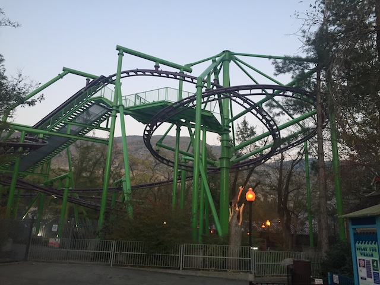
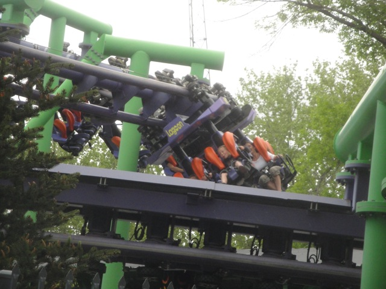
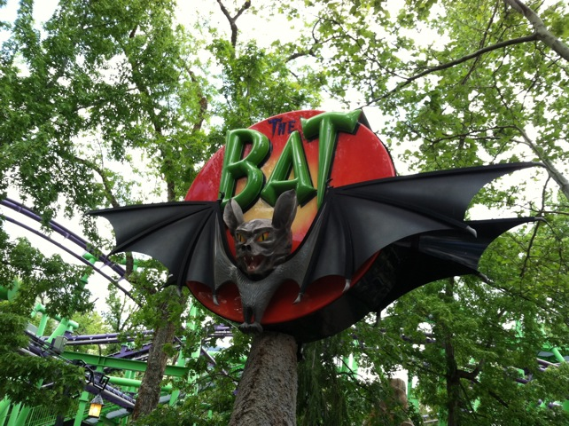

| |
Bat Review

We're here at Lagoon to ride Bat. A Typical Kiddy SLC. After climbing in the seat and pulling down the shoulder harness, you dispatch. You turn and climb up the lifthill. You feel quite big since you don't really get the feeling of an inverted coaster due to the whole catwalk being right below you as well as the small height and small seats. Then you reach the top. You start to go down a curved sort of drop thats more of just a downward quarter helix. Then you sort of go into a partial upward helix before gliding down a little in a turn sort of drop. You then go around a big turn. The big turn brings you a little jolt before going through some straight track by the lifthill. You then go into a downward helix before dipping down a little. After going through a turn, you then hit the brake run. Bat is an ok kiddy coaster. It really just sort of turns and meanders, which makes it a boring ride. Honestly, it's the only coaster at Lagoon that I wouldn't recommend.
4/10
Location: Lagoon
Opened: 2005
Built by: Vekoma
Last Ridden: September 19, 2020
I have ridden this exact same ride at the following parks.
Canada's Wonderland
Carowinds
Kings Island
Bat Photos




Home
|